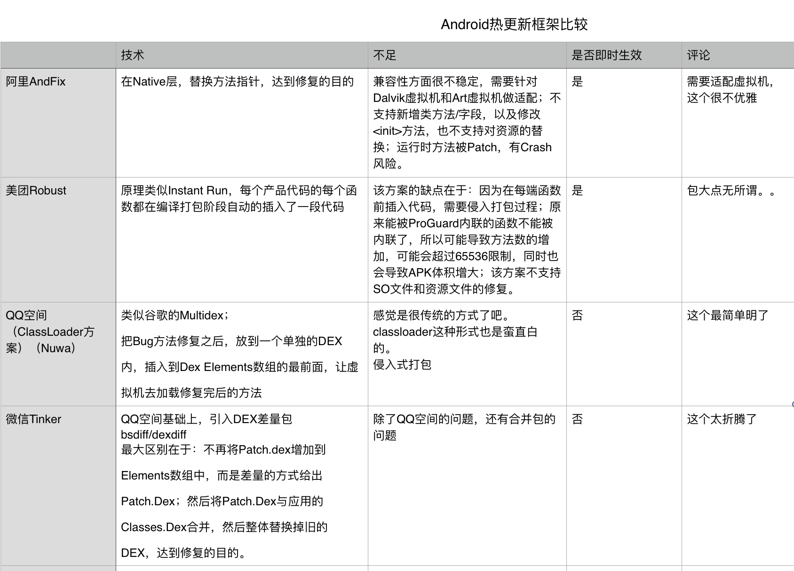

一个伪需求
Android热更新框架听的多了，真正开始用是因为组织突发奇想，说能否在智能POS上做个应用／插件，让开发者不改一行代码就能支持做扫码交易了。
智能POS其实就是带刷卡槽，芯片插卡槽，NFC读卡器的Android系统。
看完需求后，感觉意义不大啊，都是Android系统了，加个扫码模块很难么，对一个Android程序员，分分钟集成一个这是基本素养了。有点伪需求的味道。
好奇心
不管是不是伪需求，还是激发了我的好奇心，有趣，如果做，该怎么做。有想过让硬件供应商协助下，能否在SDK上开个口，但想想还是算了，成本有点高。
交代下，后端提供了套规范，终端将条码信息转成卡号和二磁道信息，后端就能转回条码，发往微信、支付宝。所以无论是刷卡交易还是条码交易，对终端来说，请求报文可以做到是一套规范。
自然就想到了方法劫持的思路，打开刷卡器方法变成打开摄像头，读磁道信息方法变成读取扫描到的条码，这样用户真不用改什么代码了。说到方法劫持，就要指望Android的热更新框架了。
Android热更新框架
Android的热更新框架一般都是阿里系、腾讯系的作品。可能是他们的apk包实在很大吧。相比我们的应用只有几M。 收集了些资料，简单对比了下。个人没有每个都实践过。

回到需求上来，我们需要的是一个能够即时生效的框架。目前用了下Dexposed，因为编程方式比较方便。 Dexposed的感受，Android 4.x Dalvik虚拟机上基本算是完美了，但是ART虚拟机就不适配了。也是Dexposed被弃用的原因。AndFix延续了Dexposed。
因为使用Dexposed，第一版，只能用在Android 4.x上，这周演示效果良好。有机会再做下Android 5.x的兼容。
最后产品还是要让开发者动代码，加一行代码。因为这些热更新框架没有哪个是能劫持其他APP方法的。
小想法，Dexposed/AndFix这个套路修复问题，以后估计会越来越难做，Android 7.x都已经支持JIT了，将Java代码编译到了本地代码，还怎么劫持Java方法呢，跑的都是本地代码了。
Last modified on 2017-04-08